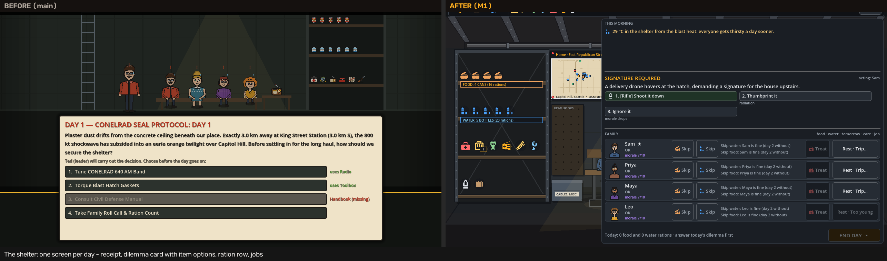
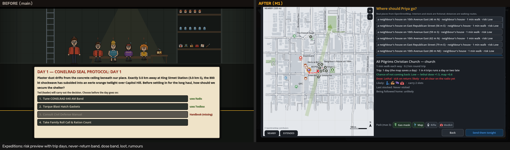
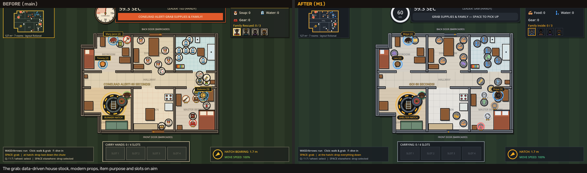
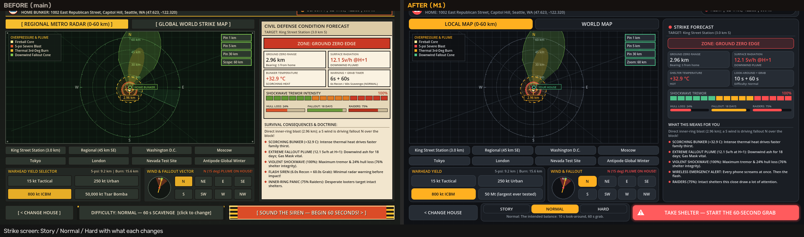
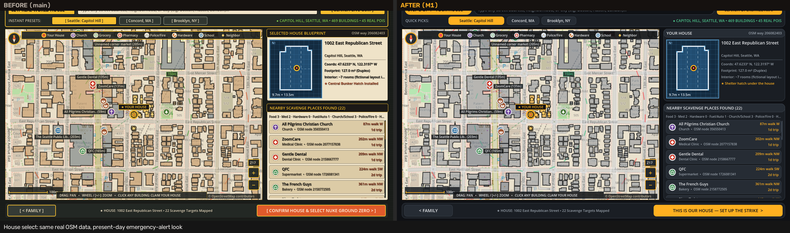

The End Is Near v3 — Milestone 1 preview
Harder, fairer, present day. Survival rules with real deadlines, trips to real places that take days and can go wrong, raids once you are followed home, three rescues that take a month, and every number on screen before you commit. The live game at the site root is unchanged until the pull request is merged.
Play the M1 preview buildGrab: WASD/arrows move · SPACE grabs and drops your load at the hatch · Q / 1–7 select a carried slot · F climbs down · TAB ends the look-around. Shelter: 1–4 or click answers the day's dilemma · Give/Skip food and water per person · Treat · Rest or Trip… opens the trip planner · ENTER ends the day · SPACE skips an animation.
Measured balance (10,000 simulated runs per policy, 37 real homes)
| Policy | Win rate | Target |
|---|---|---|
| Random (coin-flip rations, random answers) | 0.1% | ≤ 5% |
| Naive (feeds everyone every 5 days, nearest store when low) | 11.1% | 10–20% |
| Expert (rations to the thresholds, plans trips by risk and need) | 49.2% | 45–60% |
Expert median win on day 38 (earliest 27), 5 trips per run, no single cause above 40% of deaths. Full report: docs/BALANCE_REPORT.md.
Gameplay footage
Before → after





Interiors are fictional approximations generated inside each building's real OpenStreetMap outline. Map data © OpenStreetMap contributors. Item icons from game-icons.net (CC BY 3.0); see CREDITS.md.
Earlier pass
Footage of the gameplay improvement pass is still here: demo · hard-mode grab · garage escape (now switched off).